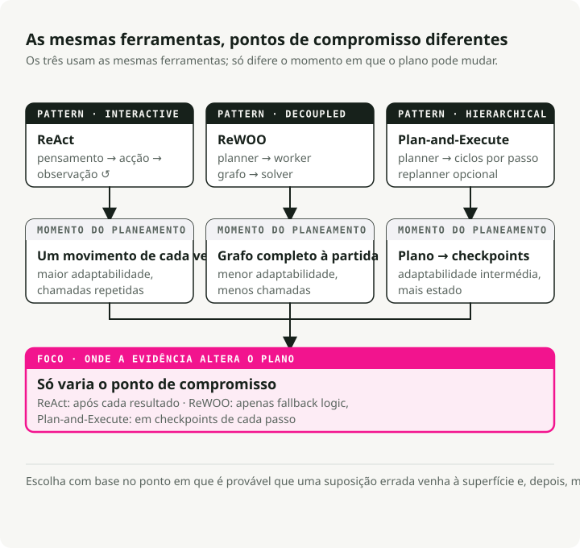
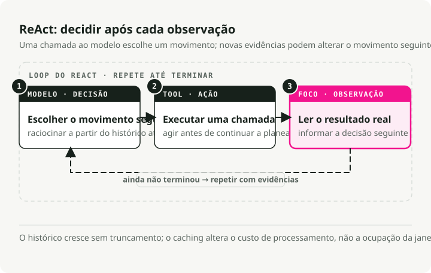
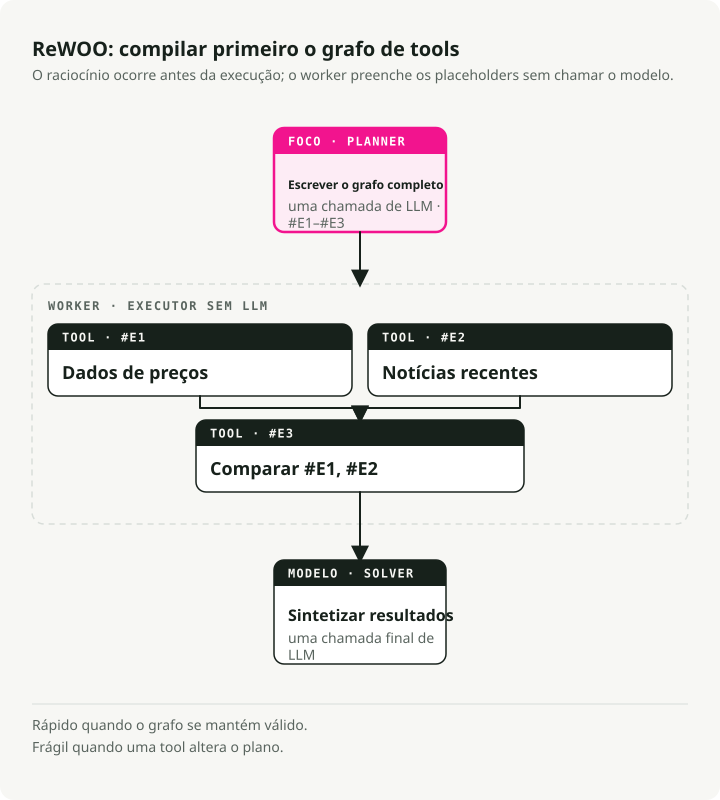
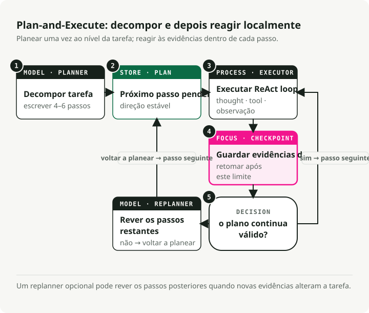
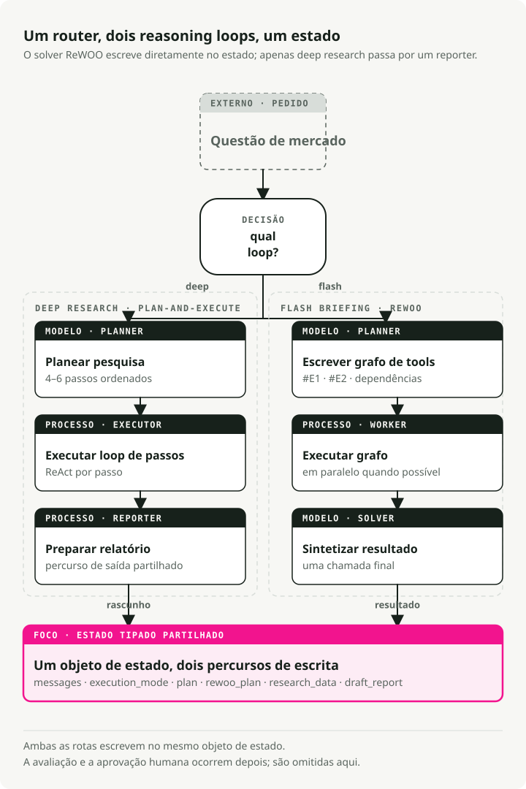

Tradução automática
Este artigo foi traduzido automaticamente a partir da versão original em inglês.
Ciclos de raciocínio de agentes de IA em 2026: ReAct vs ReWOO vs Plan-and-Execute
Parte 1 da série Engineering the Agentic Stack
Construir agentes de IA úteis é agora, sobretudo, uma questão de desenho de sistemas, não de prompt engineering. A maior decisão isolada é o ciclo de raciocínio do agente: como o sistema planeia, chama ferramentas, observa resultados e decide quando parar.
Este artigo compara os três padrões de ciclo de agentes de IA que vale a pena conhecer em 2026: ReAct, ReWOO e Plan-and-Execute. O exemplo base é um Market Analyst Agent que construí em LangGraph, com o código completo no GitHub.
TL;DR: ReAct é flexível mas caro, ReWOO é rápido quando o workflow é previsível, e Plan-and-Execute ajusta-se a análises em várias etapas. Um agente de IA em produção pode encaminhar cada pedido entre ciclos de raciocínio, usando estado partilhado e nós de LangGraph com checkpoint, para que cada tarefa use o ciclo que corresponde ao seu formato.
Porque é que os ciclos de raciocínio de agentes de IA importam
Há um ano, tornar um LLM útil era sobretudo uma questão de formular prompts. Agora trata-se de desenho de grafos: como o raciocínio, o uso de ferramentas e a memória são ligados entre si.
O ciclo de raciocínio fica no meio desse grafo. Decide quando o modelo pensa, quando chama uma ferramenta e quando pára. Escolha-se o errado e gasta-se tokens extra em chamadas desnecessárias, acrescentam-se segundos de latência por turno, ou o agente falha à primeira vez que uma ferramenta devolve algo inesperado.
Três padrões de raciocínio de agentes de IA

ReAct: pensar, agir, observar, repetir
ReAct (Yao et al., 2022) é o padrão original para agentes interativos. Executa um ciclo:
- Thought: o agente gera um "thought" para decompor o objetivo e planear o passo seguinte.
- Action: com base nesse thought, chama uma ferramenta.
- Observation: o agente lê o resultado, que atualiza a sua compreensão para o thought seguinte.

Vantagens:
- O grounding em observações reais reduz factos inventados.
- O agente pode mudar de estratégia em tempo real com base no que acabou de ver.
- O "scratchpad" dá-lhe um rasto auditável do raciocínio.
Desvantagens:
- O histórico acumula-se e é reprocessado a cada passo, por isso a latência e o custo crescem com o comprimento do ciclo.
- É ineficiente quando as chamadas a ferramentas podiam ter sido planeadas à partida, que é precisamente o nicho que o ReWOO ocupa.
- Sem uma condição de paragem ou um limite de passos, o ciclo corre indefinidamente.
Melhor para: tarefas exploratórias, debugging, situações em que não se consegue prever o que vem a seguir.
ReWOO: planear tudo à partida
ReWOO (Reasoning WithOut Observation) é um primo mais eficiente do ReAct. O truque é desacoplar o raciocínio da execução das ferramentas: em vez de parar para observar cada ação, o ReWOO planeia toda a sequência de chamadas a ferramentas numa única passagem.
- Plan: uma chamada ao LLM escreve o plano completo de chamadas a ferramentas, usando placeholders de variáveis (
#E1,#E2) para outputs que ainda não existem. - Worker: um executor não-LLM corre as ferramentas planeadas em sequência ou em paralelo, preenchendo os placeholders.
- Solver: uma chamada final ao LLM recebe as observações recolhidas e escreve a resposta.

Vantagens:
- Cerca de 5x mais eficiente em tokens do que ReAct, porque evita o histórico repetido de Thought-Action-Observation.
- Menor latência. Não há reenvio do histórico a cada passo.
- O planner pode ser afinado isoladamente, sem ambiente live.
Desvantagens:
- Frágil quando as ferramentas se comportam mal. O plano assume que tudo funciona.
- Precisa de workflows previsíveis.
- Sem lógica de fallback explícita, um plano com falhas continua a correr.
Melhor para: briefings rápidos, verificações de estado, dashboards. Tudo o que tenha ferramentas com comportamento previsível.
Plan-and-Execute: um híbrido
Plan-and-Execute fica entre os dois. O artigo descreve uma divisão simples que a maioria dos agentes modernos adotou:
- Fase de planeamento: o agente começa por gerar um plano que divide a tarefa em subtarefas menores.
- Fase de execução: o agente executa depois essas subtarefas.
O artigo original focava-se em prompting zero-shot. Frameworks modernos como LangGraph transformaram-no num padrão completo de orquestração com execução sequencial e escolha de modelo por passo (um modelo forte de raciocínio para o planeamento, um mais barato para a execução).

Vantagens:
- Raciocínio hierárquico que espelha a forma como um especialista humano decompõe um projeto.
- É possível replanear. Pode fazer-se uma pausa e reavaliar se o resultado de um passo for inesperado.
- Especialização de modelos. O planner pode ser caro, o executor pode ser barato.
- Complexidade limitada, com um checkpoint claro após cada passo.
Desvantagens:
- Latência superior à do ReWOO porque os passos correm de forma sequencial.
- Mais estado para gerir.
- Excesso de engenharia para queries de uma só vez.
Melhor para: análises complexas em várias etapas, tarefas de investigação, tudo o que precise de síntese no fim.
Como escolher um ciclo de raciocínio de agente de IA
| Feature | ReAct (2022) | Plan-and-Execute (2023) | ReWOO (2023) |
|---|---|---|---|
| Core philosophy | Improvisador: age e depois decide o que fazer a seguir com base no resultado. | Arquiteto: constrói um plano completo, executa-o e depois revê-o. | Otimizador: escreve um "script" com variáveis e executa tudo de uma vez. |
| Workflow | Ciclo iterativo: Thought → Action → Observation. | Duas fases: Fase 1 (Planning), Fase 2 (Execution). | Desacoplado: o Planner cria um grafo de chamadas a ferramentas; o Worker executa-as. |
| Adaptability | Máxima: pode mudar de direção após cada chamada a ferramenta. | Média: normalmente só replaneia depois de concluir um conjunto de passos. | Mínima: normalmente segue o script inicial a menos que o Solver falhe. |
| Efficiency | Baixa: uso elevado de tokens; tem de reler todo o histórico em cada passo. | Média: poupa tokens ao não "repensar" durante a execução. | Alta: chamadas mínimas ao LLM; pode paralelizar a execução de ferramentas para ganhar velocidade. |
| Best for | Exploração aberta ou tarefas em que os resultados são imprevisíveis. | Tarefas de longo horizonte que exigem um objetivo estável (ex.: escrever um artigo). | Workflows estruturados e repetíveis (ex.: verificar o tempo em 5 cidades). |
1. ReAct: o padrão "pensar à medida que avança"
Como se sente: como um humano a fazer debugging de um problema. "Vou tentar isto... ok, não funcionou, deixa-me experimentar antes outra coisa."
Ponto forte: lida bem com unknown unknowns. Se um resultado de pesquisa revelar um novo tópico, o agente pode mudar de rumo no passo seguinte.
Ponto fraco: tende a entrar em ciclo sobre uma ação falhada. É o padrão mais caro em tokens.
2. Plan-and-Execute: o padrão orientado para a missão
Como se sente: como um gestor de projeto. "Aqui está o plano de 5 passos. Vamos fazer os passos 1 a 5 e depois verificar se terminámos."
Ponto forte: mantém o agente focado no objetivo de alto nível. Melhores taxas de sucesso em tarefas longas e complexas.
Ponto fraco: se o passo 1 falhar de uma forma que comprometa os passos 2-5, o agente pode insistir no plano quebrado antes de dar conta disso.
3. ReWOO: o padrão compilador
Como se sente: como escrever um pequeno programa. "Preciso de dados da Tool A e da Tool B, e depois vou combiná-los na Tool C."
Ponto forte: muito mais rápido e barato. O plano é compilado uma vez com placeholders (#E1 para o output da primeira ferramenta) e depois executado sem mais chamadas ao LLM até à síntese final.
Ponto fraco: cego durante a execução. Se a primeira ferramenta disser "I can't find that person," o agente continua na mesma a correr os passos seguintes que dependiam da existência dessa pessoa.
Qual escolher
- ReAct se o agente estiver a conversar com um utilizador e precisar de reagir no momento.
- Plan-and-Execute se estiver a automatizar um trabalho longo e em várias etapas, como um relatório de investigação.
- ReWOO se tiver um pipeline previsível e quiser cortar a sua fatura de API em algo como 80%.
Um exemplo prático: o Market Analyst Agent
Para tornar isto concreto, construí um Market Analyst Agent que usa os três padrões na mesma codebase, numa tarefa de market research.
Usa LangGraph para orquestração. Os três padrões partilham o mesmo objeto de estado, por isso o router pode escolher qual correr por pedido:

Definição de estado
O estado partilhado captura tudo o que o agente precisa em todos os modos:
class PlanStep(BaseModel):
"""A single step in the research plan."""
step_number: int
description: str
tool_hint: str | None = None
completed: bool = False
result: str | None = None
class UserProfile(BaseModel):
"""Structured user context loaded from long-term memory."""
risk_tolerance: str | None = None
investment_horizon: str | None = None
class AgentState(BaseModel):
"""Main state for the Market Analyst Agent graph."""
# Identity and profile context for memory-backed personalization
user_id: str
user_profile: UserProfile = Field(default_factory=UserProfile)
# Message history with LangGraph's add_messages reducer
messages: Annotated[list, add_messages] = Field(default_factory=list)
# Execution mode (set by router)
execution_mode: ExecutionMode | None = None
# Plan-and-Execute state
plan: list[PlanStep] = Field(default_factory=list)
current_step_index: int = 0
# ReWOO state
rewoo_plan: list[ReWOOPlanStep] = Field(default_factory=list)
# Research results
research_data: ResearchData | None = None
# HITL output
draft_report: DraftReport | None = None
report_approved: bool = False
Padrão 1: implementação de Plan-and-Execute
Plan-and-Execute é a escolha certa para tarefas que exigem síntese em várias etapas. O truque é manter planeamento e execução separados: um modelo forte para o plano inicial e depois um ciclo ReAct para executar cada passo com margem para reagir aos resultados das ferramentas.
Como corresponde ao padrão:
- Uma fase única de planeamento inicial. Uma única chamada ao LLM produz o plano completo como lista de descrições de passos.
- Output estruturado via Schema-Guided Reasoning, o que garante JSON válido.
- Ainda sem execução de ferramentas. O planner decide apenas o que fazer, não como.
- Passos legíveis por humanos. Cada passo é texto que um executor vai interpretar.
# System prompt guides the LLM to think like a research analyst
# creating a strategic plan, not immediate tool calls
PLANNER_SYSTEM_PROMPT = """You are a senior investment research analyst.
Break down stock analysis requests into 4-6 research steps covering:
1. Current price and basic metrics
2. Recent news and announcements
3. Competitor analysis (if relevant)
4. Financial health assessment
5. Risk factors
6. Investment thesis synthesis
Output as JSON with step_number, description, and tool_hint."""
# Schema-Guided Reasoning: Enforce structure with Pydantic
class PlanOutput(BaseModel):
"""Structured output for the planner."""
steps: list[PlanStep] = Field(description="Research steps to execute")
ticker: str = Field(description="The stock ticker being analyzed")
def planner_node(state: AgentState) -> dict:
"""Generate a research plan from the user's request.
This is Phase 1 of Plan-and-Execute: creating the high-level strategy.
"""
# Use a powerful model for strategic planning
llm = ChatAnthropic(model="claude-sonnet-4-5-20250929", temperature=0)
# Apply Schema-Guided Reasoning to guarantee valid plan structure
# This prevents common formatting errors that would break execution
structured_llm = llm.with_structured_output(PlanOutput)
# Context from long-term memory personalizes the plan
profile_context = f"""
User Profile:
- Risk Tolerance: {state.user_profile.risk_tolerance}
- Investment Horizon: {state.user_profile.investment_horizon}
"""
# Single LLM call creates the complete plan
result: PlanOutput = structured_llm.invoke([
SystemMessage(content=PLANNER_SYSTEM_PROMPT + profile_context),
HumanMessage(content=f"Create a research plan for: {last_user_message}"),
])
# State update: Store the plan and initialize tracking
return {
"plan": result.steps, # The sequential steps to execute
"current_step_index": 0, # Start at step 0
"research_data": ResearchData(ticker=result.ticker), # Initialize data container
}
Essa linha llm.with_structured_output(PlanOutput) é Schema-Guided Reasoning (SGR), que abordei num artigo anterior. Forçar o schema PlanOutput significa que o planner devolve sempre uma lista válida de passos. O LangGraph usa depois esses outputs estruturados para conduzir um controlo de fluxo determinístico através de conditional edges.
Padrão 2: execução ReAct
Assim que o plano existe, o executor corre cada passo como o seu próprio ciclo ReAct. Esta é a Fase 2: cada passo é suficientemente pequeno para que um ciclo Thought-Action-Observation se mantenha focado, e o agente consiga reagir ao que a ferramenta devolver.
Como a parte ReAct corresponde ao padrão:
- Execução iterativa. Um passo de cada vez, com feedback de observação.
- O ciclo Thought-Action-Observation corre dentro de
create_react_agent. - Os resultados dos passos anteriores são passados como contexto para o raciocínio atual.
- O agente escolhe ferramentas com base na descrição do passo.
- Pode mudar de abordagem a meio do passo consoante o que uma ferramenta devolver.
# Tools available for the ReAct agent to choose from
TOOLS = [
get_stock_snapshot,
get_price_history,
search_news,
search_competitors,
get_financials,
]
def executor_node(state: AgentState) -> dict:
"""Execute the current step using a ReAct agent.
This is Phase 2 of Plan-and-Execute: adaptive execution of each planned step.
Each step runs as a mini ReAct loop until completion.
"""
# Get the current step from the plan
current_step = state.plan[state.current_step_index]
# Build context from what we've learned so far
# This matters: each step builds on previous observations
previous_context = ""
for step in state.plan[:state.current_step_index]:
if step.result:
previous_context += f"\nStep {step.step_number}: {step.result}\n"
# Create a ReAct agent for this step
# LangGraph's create_react_agent implements the full Thought-Action-Observation loop:
# 1. Agent generates a "thought" about what tool to call
# 2. Agent calls the tool ("action")
# 3. Tool returns result ("observation")
# 4. Agent decides: call another tool or finish
react_agent = create_react_agent(
model=ChatAnthropic(model="claude-sonnet-4-5-20250929"),
tools=TOOLS,
)
# Invoke the ReAct loop for this single step
# The agent will loop internally until it completes the step
result = react_agent.invoke({
"messages": [
SystemMessage(content=EXECUTOR_SYSTEM_PROMPT),
HumanMessage(content=f"""Execute Step {current_step.step_number}:
{current_step.description}
Ticker: {state.research_data.ticker}
Previous findings: {previous_context}"""),
]
})
# Extract the final answer from the ReAct agent's message history
# The last message contains the synthesis after all tool calls
updated_plan = list(state.plan)
updated_plan[state.current_step_index] = PlanStep(
step_number=current_step.step_number,
description=current_step.description,
completed=True,
result=result["messages"][-1].content, # Final observation
)
# State update: Mark step complete and advance to next
return {
"plan": updated_plan,
"current_step_index": state.current_step_index + 1,
}
Este é o fluxo central de Plan-and-Execute: um modelo poderoso escreve o plano, e depois o ReAct executa cada passo com total adaptabilidade.
Padrão 3: ReWOO para snapshots rápidos
Para briefings rápidos, o ReWOO ignora o raciocínio intercalado e corre as ferramentas em paralelo. O planner emite à partida um script compilado de chamadas a ferramentas, e o worker executa-o sem qualquer intervenção adicional do LLM.
A estrutura é esta:
- Três fases (Planner → Worker → Solver), sem ciclos.
- As chamadas a ferramentas referenciam placeholders
#E1,#E2para resultados que ainda não existem. - Sem LLM durante a execução. O worker limita-se a correr ferramentas.
- Ferramentas independentes correm em paralelo.
- Uma chamada de síntese no fim, sobre todos os dados ao mesmo tempo.
Fase 1: planner ReWOO (cria à partida o grafo completo de execução)
class ReWOOPlanStep(BaseModel):
"""A step in the ReWOO plan with variable placeholders.
Key difference from Plan-and-Execute's PlanStep:
- Contains actual tool_name and tool_args (not just description)
- Uses variable references (#E1) for dependencies
"""
step_id: str # e.g., "#E1" - becomes a variable
description: str
tool_name: str # Exact tool to call
tool_args: dict # May contain variable refs like {"price": "#E1"}
depends_on: list[str] = [] # For dependency ordering
result: str | None = None
class ReWOOPlanOutput(BaseModel):
"""Structured output for ReWOO planner."""
steps: list[ReWOOPlanStep] = Field(description="Planned tool calls with variables")
def rewoo_planner_node(state: AgentState) -> dict:
"""Generate a complete plan of tool calls upfront.
This is the key difference from Plan-and-Execute: instead of creating
human-readable step descriptions, we create EXACT tool calls that
the worker will execute blindly.
"""
llm = ChatAnthropic(model="claude-sonnet-4-5-20250929", temperature=0)
# Schema-Guided Reasoning ensures valid tool call specifications
structured_llm = llm.with_structured_output(ReWOOPlanOutput)
ticker = state.research_data.ticker if state.research_data else "UNKNOWN"
# Single LLM call to plan ALL tool executions
result: ReWOOPlanOutput = structured_llm.invoke([
SystemMessage(content=REWOO_PLANNER_PROMPT),
HumanMessage(content=f"""Create a ReWOO plan for: {query}
Ticker: {ticker}
Output tool calls with:
- step_id: Variable name (#E1, #E2, etc.)
- description: What this accomplishes
- tool_name: Exact tool from the list
- tool_args: Dictionary of arguments
- depends_on: List of step_ids this depends on"""),
])
# State update: Store the complete execution plan
# Worker will execute this without any LLM involvement
return {"rewoo_plan": result.steps}
Fase 2: worker ReWOO (executa ferramentas sem raciocínio do LLM)
def rewoo_worker_node(state: AgentState) -> dict:
"""Execute all planned tools in parallel (no LLM calls).
This is the key efficiency: Worker is "dumb" - it just runs tools
according to the plan. No LLM calls = massive token savings.
"""
results = {} # Store results keyed by step_id (e.g., "#E1": "$150.23")
# Execute ALL independent steps in parallel using ThreadPoolExecutor
# This is where ReWOO gets its speed advantage
with ThreadPoolExecutor(max_workers=5) as executor:
futures = {
executor.submit(execute_tool, step): step
for step in state.rewoo_plan
if not step.depends_on # Only independent tools for parallel batch
}
# Collect results as they complete
for future in as_completed(futures):
step = futures[future]
results[step.step_id] = future.result()
# No LLM reasoning here - just store the raw tool output
# State update: Store results for the Solver phase
return {"rewoo_plan": updated_steps}
Fase 3: solver ReWOO (sintetiza todos os resultados numa chamada ao LLM)
def rewoo_solver_node(state: AgentState) -> dict:
"""Synthesize all tool results into a flash briefing.
This is the second efficiency gain: Instead of interleaving
LLM calls with tool execution (like ReAct), we make ONE
final synthesis call with all gathered data.
"""
# Build context from ALL tool results at once
tool_results = []
for step in state.rewoo_plan:
if step.result:
tool_results.append(f"### {step.description}\n{step.result}")
context = "\n\n".join(tool_results)
# Single LLM call to synthesize everything
structured_llm = llm.with_structured_output(FlashBriefingOutput)
result = structured_llm.invoke([
SystemMessage(content=REWOO_SOLVER_PROMPT),
HumanMessage(content=f"Create a flash briefing from this data:\n\n{context}"),
])
return {"draft_report": result}
A diferença principal: o ReWOO planeia à partida todas as chamadas a ferramentas com placeholders (#E1, #E2), executa-as em paralelo sem chamadas ao LLM pelo meio e sintetiza os resultados numa chamada única no fim. Isso torna-o barato para workflows previsíveis.
Compreender o código: como cada padrão difere
Os três padrões diferem em quando e como chamam o LLM:
| Pattern | LLM calls during execution | State updates | Key code pattern |
|---|---|---|---|
| Plan-and-Execute | 1 para planeamento + 1 por passo | Conclusão sequencial de passos | planner_node() → loop: executor_node() → reporter_node() |
| ReAct (dentro de cada passo) | Várias por passo (ciclos thought-action) | Histórico de mensagens acumulado | create_react_agent() faz loops internamente até o passo estar concluído |
| ReWOO | 1 para planeamento + 0 durante a execução + 1 para síntese | Conclusão paralela de ferramentas | rewoo_planner_node() → rewoo_worker_node() → rewoo_solver_node() |
O que muda entre eles é aquilo que o planner produz. Isso decide tudo o que vem a jusante.
-
Plan-and-Execute cria descrições de passos legíveis por humanos:
# Planner output (list of PlanStep objects) plan = [ PlanStep( step_number=1, description="Get current price and key financial metrics", tool_hint="get_stock_price" ), PlanStep( step_number=2, description="Search for recent news and earnings", tool_hint="search_news" ), # ... more steps ]O executor lê cada descrição e decide que ferramentas chamar. É flexível, mas custa uma chamada ao LLM por passo.
-
O ReAct não tem um plano inicial. Usa raciocínio iterativo:
# No planning phase - ReAct works step-by-step with accumulated messages messages = [ HumanMessage(content="Execute Step 1: Get current price"), AIMessage(content="I'll call get_stock_price"), ToolMessage(tool_call_id="1", content="$132.45"), AIMessage(content="Now I need metrics..."), # ... agent continues until step complete ]Várias chamadas ao LLM por passo, adaptando-se com base nas observações. O mais flexível, o mais caro.
-
O ReWOO cria especificações explícitas e executáveis de chamadas a ferramentas:
# Planner output (list of ReWOOPlanStep objects) rewoo_plan = [ ReWOOPlanStep( step_id="#E1", tool_name="get_stock_price", tool_args={"ticker": "NVDA"} ), ReWOOPlanStep( step_id="#E2", tool_name="search_news", tool_args={"query": "NVDA earnings", "limit": 5} ), # ... all tool calls planned upfront ]O worker executa às cegas, sem envolvimento do LLM. Todo o raciocínio vive no planner e no solver. O mais barato dos três.
Fluxo de memória e estado:
- Plan-and-Execute: o estado passa por
plan→current_step_index→research_data. - ReAct: o estado acumula-se no array
messages(o histórico completo da conversa). - ReWOO: o estado passa por
rewoo_plan, com os camposresultpreenchidos pelo worker.
Juntar tudo: ligar o grafo
Eis como os três padrões coexistem num único sistema LangGraph. Partilham um AgentState e vivem no mesmo grafo. Um router escolhe o caminho por pedido, por isso isto é um agente com três modos de execução, não três agentes disfarçados num sobretudo.
O LangGraph mantém a ligação declarativa:
def create_graph(checkpointer=None):
builder = StateGraph(AgentState)
# Add nodes
builder.add_node("router", router_node)
builder.add_node("planner", planner_node)
builder.add_node("executor", executor_node)
builder.add_node("reporter", reporter_node)
builder.add_node("rewoo_planner", rewoo_planner_node)
builder.add_node("rewoo_worker", rewoo_worker_node)
builder.add_node("rewoo_solver", rewoo_solver_node)
# Define edges
builder.add_edge(START, "router")
builder.add_conditional_edges("router", route_after_router, {
"planner": "planner",
"rewoo_planner": "rewoo_planner",
})
# Deep Research path
builder.add_edge("planner", "executor")
builder.add_conditional_edges("executor", route_after_executor, {
"executor": "executor", # Loop back for more steps
"reporter": "reporter", # Done with plan
})
builder.add_edge("reporter", END)
# Flash Briefing path (ReWOO)
builder.add_edge("rewoo_planner", "rewoo_worker")
builder.add_edge("rewoo_worker", "rewoo_solver")
builder.add_edge("rewoo_solver", END)
return builder.compile(
checkpointer=checkpointer,
interrupt_before=["reporter"], # HITL pause for approval
)
Seleção automática de padrão com um router
Para escolher o ciclo certo para cada pedido, acrescentei um classificador router. Usa Schema-Guided Reasoning para manter a classificação fiável:
class ExecutionMode(str, Enum):
"""Execution mode for the agent."""
DEEP_RESEARCH = "deep_research" # Plan-and-Execute + ReAct (thorough)
FLASH_BRIEFING = "flash_briefing" # ReWOO (fast, token-efficient)
class RouterOutput(BaseModel):
"""Structured output for the router."""
mode: ExecutionMode # DEEP_RESEARCH or FLASH_BRIEFING
ticker: str
reasoning: str
ROUTER_SYSTEM_PROMPT = """Classify the user's request:
1. **deep_research**: Complex analysis requiring synthesis
- Examples: "Analyze strategic risks", "investment thesis"
2. **flash_briefing**: Quick snapshots, simple data retrieval
- Examples: "quick snapshot", "current price"
Default to deep_research if unclear."""
structured_llm = llm.with_structured_output(RouterOutput)
Com isto em vigor, os utilizadores não escolhem um modo. O router encaminha "current price" para ReWOO e "investment thesis" para Plan-and-Execute por sua iniciativa.
Principais conclusões
- ReAct é a opção por defeito para flexibilidade, à custa de tokens e latência.
- ReWOO ganha em velocidade e custo quando as ferramentas são fiáveis e os resultados previsíveis.
- Plan-and-Execute é a escolha certa para análises complexas que exigem síntese no fim.
- Um router pode escolher entre eles por pedido, para que os utilizadores não tenham de o fazer.
- A gestão de estado importa. O checkpointing do LangGraph é o que torna possíveis as interrupções e a recuperação.
A implementação completa, incluindo o router e o estado partilhado, está no repositório Market Analyst Agent.
O que vem a seguir
A Parte 2, Arquitetura de memória para agentes de IA em 2026, aborda contexto de curto prazo com checkpointing em PostgreSQL e conhecimento de longo prazo em armazenamento vetorial Qdrant. É isso que torna possíveis workflows de pausa/retoma e aprendizagem entre sessões.
Referências
- ReAct: Synergizing Reasoning and Acting in Language Models (Yao et al., 2022)
- ReWOO: Decoupling Reasoning from Observations for Efficient Augmented Language Models (Xu et al., 2023)
- Plan-and-Solve Prompting: Improving Zero-Shot Chain-of-Thought Reasoning by Large Language Models (Wang et al., 2023)
- Market Analyst Agent Repository
O código do Market Analyst Agent está no GitHub se quiser acompanhar a leitura.
Série: Engineering the Agentic Stack
- Parte 1: Ciclos de raciocínio de agentes de IA em 2026 (este artigo)
- Parte 2: Arquitetura de memória para agentes de IA em 2026 — checkpoints, vector stores e memória documental
- Parte 3: Utilização de ferramentas por agentes de IA em 2026 — MCP, CLI, Skills, execução de código e ACI
- Parte 4: Segurança de agentes de IA em 2026 — guardrails, permissões, sandboxes, HITL e scoping de MCP
- Parte 5: Runtime de agentes de IA de longa duração em 2026 — sessões, sandboxes, checkpoints, harnesses e formas de deployment